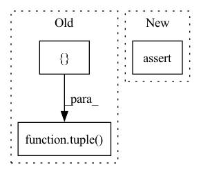

Pattern ID :31948
Before Change
local_part=inputs[1],
group=self.grid.get_slice_parallel_group())
inputs = tuple([ part_input.full(), inputs[2])
inputs[0].requires_grad = True
// skip mask
//inputs[1].requires_grad = True
part_input = NoneAfter Change
// Partition the outputs if we are not the last stage
if self.is_pipe_partitioned and not self.is_last_stage():
assert torch.is_tensor(outputs)
part = PartitionedTensor(tensor=outputs,
group=self.grid.get_slice_parallel_group())
// Clear the large output data, but save the computation graphIn pattern: SUPERPATTERN
Frequency: 6
Non-data size: 3
Instances Fragment ID: 93386465
Project Name: microsoft/deepspeed
Commit Name: e2fdd254edff5780d00c04111572c913ee698719
Time: 2021-09-29
Author: jerasley@microsoft.com
File Name: deepspeed/runtime/pipe/engine.py
M Class Name: PipelineEngine
N Class Name: PipelineEngine
M Method Name: _exec_forward_pass(2)
N Method Name: _exec_forward_pass(2)
M Parent Class: DeepSpeedEngine
N Parent Class: DeepSpeedEngine
M File Name: deepspeed/runtime/pipe/engine.py
N File Name: deepspeed/runtime/pipe/engine.py
M Start Line: 556
M End Line: 577
N Start Line: 570
N End Line: 596
Before Change
large_rates = []
small_rates = []
for _ in range(num_branches//2):
large_rates.append(tuple([ value_crop(
int(round((1 + expand_rate) * dilation[0])), min_dilation, max_dilation),
value_crop(
int(round((1 + expand_rate) * dilation[1])), min_dilation, max_dilation)
) )
small_rates.append(tuple([value_crop(
int(round((1 - expand_rate) * dilation[0])), min_dilation, max_dilation),
value_crop(After Change
def rf_expand(dilation, expand_rate, num_branches, min_dilation=1, max_dilation=None):
rate_list = []
assert num_branches>=2, "number of branches must >=2"
delta_dilation0 = expand_rate * dilation[0]
delta_dilation1 = expand_rate * dilation[1]
for i in range(num_branches): Fragment ID: 93386466
Project Name: shanghua-gao/g2l-search
Commit Name: 20333635d1dc79396d2d4859805b8f18da887a0a
Time: 2023-01-02
Author: nanoc@live.cn
File Name: rfconv.py
M Class Name: AnonimousClass
N Class Name: AnonimousClass
M Method Name: rf_expand(5)
N Method Name: rf_expand(5)
M Parent Class:
N Parent Class:
M File Name: rfconv.py
N File Name: rfconv.py
M Start Line: 31
M End Line: 51
N Start Line: 31
N End Line: 40
Before Change
grid = grid.detach()
padding = [ 0tuple( reversed(padding))
if padding_mode == "replicate":
// replication padding has some strange constraints...
assert len(tensor.shape) - dim <= 2After Change
tensor_ = tensor_.view(dim_last_shape)
tensor_ = torch.movedim(tensor_, len(source_shape)-1, dim)
assert tensor_.shape == source_shape
return tensor_
Fragment ID: 93386467
Project Name: matthias-k/deepgaze
Commit Name: a2f6037f9ae20086ff19775583ed036167449172
Time: 2022-06-20
Author: matthias.kuemmerer@bethgelab.org
File Name: deepgaze_pytorch/layers.py
M Class Name: AnonimousClass
N Class Name: AnonimousClass
M Method Name: gaussian_filter_1d(7)
N Method Name: gaussian_filter_1d(7)
M Parent Class:
N Parent Class:
M File Name: deepgaze_pytorch/layers.py
N File Name: deepgaze_pytorch/layers.py
M Start Line: 130
M End Line: 160
N Start Line: 128
N End Line: 164
Before Change
outputs.data = torch.zeros(1)
self.pipe_buffers["output_tensors"][buffer_id] = outputs
// Inject the partitioned tensor into the output before sending
outputs = tuple([ part.to_meta(), part.data())
part = None
self.pipe_buffers["outputs"][buffer_id] = outputs
After Change
if isinstance(outputs, tuple):
first_output = outputs[0]
// TODO: Improve pipe partitioning to pass multiple tensors that require grads
assert all([
torch.is_tensor(elt) and elt.requires_grad is False
for elt in outputs[1:]
]) Fragment ID: 93386469
Project Name: microsoft/deepspeed
Commit Name: 9c672783e95c3729ee7dae72c2afdb0b46ed5ff9
Time: 2021-10-07
Author: 24695242+thomasw21@users.noreply.github.com
File Name: deepspeed/runtime/pipe/engine.py
M Class Name: PipelineEngine
N Class Name: PipelineEngine
M Method Name: _exec_forward_pass(2)
N Method Name: _exec_forward_pass(2)
M Parent Class: DeepSpeedEngine
N Parent Class: DeepSpeedEngine
M File Name: deepspeed/runtime/pipe/engine.py
N File Name: deepspeed/runtime/pipe/engine.py
M Start Line: 571
M End Line: 599
N Start Line: 587
N End Line: 622
Before Change
assert torch.is_tensor(inputs)
part = PartitionedTensor(tensor=inputs.grad,
group=self.grid.get_slice_parallel_group())
inputs = tuple([ part.to_meta(), part.data())
// XXX Terrible hack
// Drop the attention mask from the input buffer here. It does not have
// a grad that needs to be communicated. We free the buffer immediatelyAfter Change
if self.is_grad_partitioned:
if isinstance(inputs, tuple):
first_input = inputs[0]
assert all([torch.is_tensor(elt) for elt in inputs[1:]])
inputs_grad_tail = [
elt.grad for elt in inputs[1:] if elt.grad is not None
] Fragment ID: 93386471
Project Name: microsoft/deepspeed
Commit Name: 9c672783e95c3729ee7dae72c2afdb0b46ed5ff9
Time: 2021-10-07
Author: 24695242+thomasw21@users.noreply.github.com
File Name: deepspeed/runtime/pipe/engine.py
M Class Name: PipelineEngine
N Class Name: PipelineEngine
M Method Name: _exec_send_grads(2)
N Method Name: _exec_send_grads(2)
M Parent Class: DeepSpeedEngine
N Parent Class: DeepSpeedEngine
M File Name: deepspeed/runtime/pipe/engine.py
N File Name: deepspeed/runtime/pipe/engine.py
M Start Line: 896
M End Line: 896
N Start Line: 918
N End Line: 937